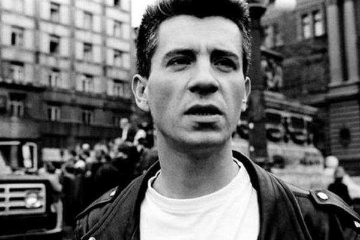

Milan Mladenović
Milan Mladenović
je bio srpski rok muzičar i antiratni aktivista, koji je najpoznatiji kao pevač i gitarista beogradske rok grupe Ekatarina Velika.
Rođen je 21. septembra 1958. godine u Zagrebu, od oca Spase (rodom iz Kruševca, Srbija), koji je bio vojno lice, i majke Danice (iz Makarske, Hrvatska). U šestoj godini se sa porodicom preselio u Sarajevo, gde je živeo narednih nekoliko godina, o čemu je rekao:
„Sarajevo je verovatno mračno uticalo na mene. Bio sam strašno ratoboran, istinoljubiv, mali, ovolicki, i stalno sam se tukao sa starijima od sebe. Oni su me, naravno, mlatili i tako sam ja dolazio kući krvav, plačući, i to je trajalo tih šest, sedam godina koliko sam živeo tamo... Bio sam klinac sa naočarima i nosio tango-gitaru ispod miške. Odlazio sam na časove kod čuvenog Gari Garinče. Od njega sam naučio neke akorde. Posle sam se preselio u Beograd.”
Godine 1970, porodica Mladenović preselila se u Beograd. Milan je pohađao Jedanaestu beogradsku gimnaziju u kojoj je krajem sedamdesetih godina, zajedno sa školskim drugom Dragomirom Mihajlovićem Gagijem i drugom iz kraja Milanom Stefanovićem - Mikicom, osnovao svoj prvi bend — Limunovo drvo. Svirali su na gitarijadama u Žarkovu i Železniku, u Bloku 45 (tzv. „Rok blok”), u Domu omladine, a održali su i tri samostalna koncerta u SKC-u i Studiju M u Novom Sadu. Poznatije numere Limunovog drveta bile su: „Da li se sećate?”, „Sedmi krug”, „Oko moje glave”, „Limunovo drvo”, „Ne veruj”, „Prevaren” i „Crni hleb“. U to vreme Milanovo društvo postalo je aktivno uključeno u novi pravac muzike poznat kao novi talas (engl. new wave).